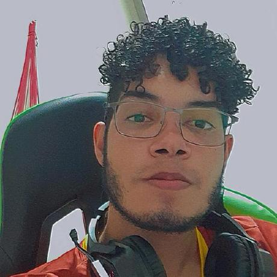

Dev Tallys - Backend

Olá pessoal meu nome é Tallys, sou desenvolvedor Backend da byte. Sou natural de São Fernando, gosto de ouvir rap e raggae, comer frutas e praticar esportes e jogos eletrônicos. Estou muito animado para desenvolver com a Byte!